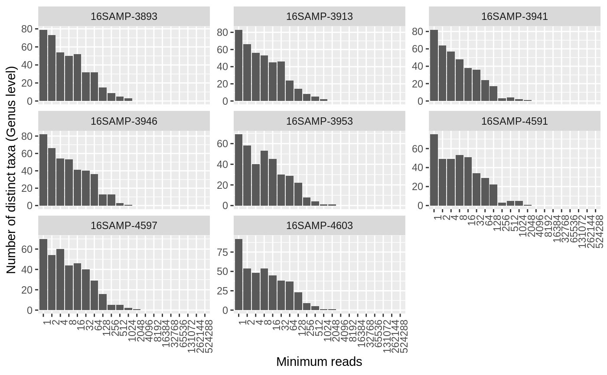

Generates an octave plot to assess alpha diversity. An octave plot is a histogram of the number of taxa observed by bins of read counts, where the bin ranges increase exponentially, see details.
amp_octave( data, tax_aggregate = "OTU", group_by = 1L, scales = "fixed", num_threads = parallel::detectCores() - 2L )
| data | (required) Data list as loaded with |
|---|---|
| tax_aggregate | Aggregate (sum) OTU's to a specific taxonomic level initially. OTU's that have not been assigned at the chosen level will be removed with a message. (default: |
| group_by | Group the samples based on a categorical/discrete variable in the metadata. It is recommended to look at samples individually. Can be a character vector with variable names as-is or a numerical vector with variable positions in the metadata of any length. Set to |
| scales | If |
| num_threads | Maximum number of distinct groups as defined by |
A ggplot2 object
The \(n\)th bin in the histogram has the range \(r(n)=2^n...2^{n+1}-1\). The height of the bars then reflect the number of unique taxa with read counts in each bin. By judging the distribution one can assess whether the samples have been sequenced deeply enough at the chosen taxonomic level. A full symmetrical bell-shaped distribution with the left part far from the y-axis is the ideal. A high amount of OTU's with a low amount of reads indicates noise, chimeras, and even cross talk.
Aggregating OTU's using tax_aggregate is useful to assess whether the samples
have been sequenced deep enough to capture the full diversity at the given level, but
ONLY applies to OTU's that have assigned taxonomy at the given level.
It is recommended to look at samples individually as grouping samples will almost always look ideal. It is better to identify "bad" samples individually and remove them.
Kasper Skytte Andersen ksa@bio.aau.dk
# Load example data data("AalborgWWTPs") # Subset data ds <- amp_subset_samples(AalborgWWTPs, Year %in% 2014)#> #> #># Generate an octave plot of all samples at Genus level. Adjust num_threads to # process multiple groups simultaneously using multicore processing amp_octave(ds, group_by = "SampleID", tax_aggregate = "Genus", scales = "free_y", num_threads = 1 )#>